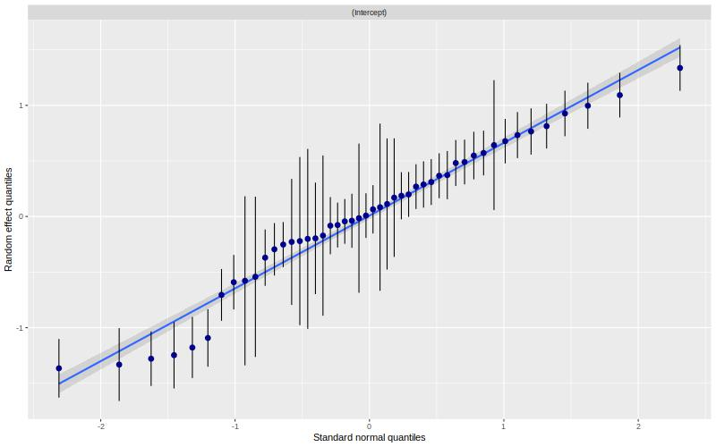
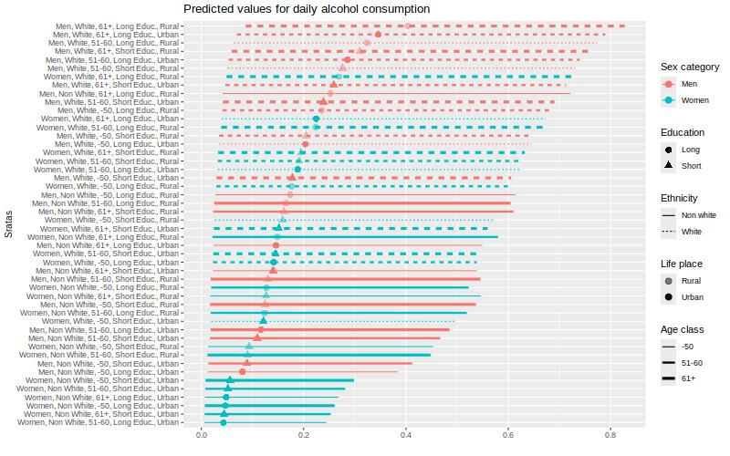

5 More complexe example - binary outcome
As a working example, we want to explore intersectional inequalities in exposition to air pollution (pm 10) by intersectional strata (48 stratas).
5.1 Description
We can start by describe the outcome by strata.
table1::table1(~ Sex + Age_class + Ethnicity +
Education + Urban | AlcDaily,
data=mydata,
overall=c(left="Total"),
caption="Description by Alcohol consumption")| Total (N=502461) |
No (N=400687) |
Yes (N=101774) |
|
|---|---|---|---|
| Sex | |||
| Women | 273354 (54.4%) | 229491 (57.3%) | 43863 (43.1%) |
| Men | 229107 (45.6%) | 171196 (42.7%) | 57911 (56.9%) |
| Age_class | |||
| -50 | 132145 (26.3%) | 111893 (27.9%) | 20252 (19.9%) |
| 51-60 | 177222 (35.3%) | 140862 (35.2%) | 36360 (35.7%) |
| 61+ | 193094 (38.4%) | 147932 (36.9%) | 45162 (44.4%) |
| Ethnicity | |||
| Non White | 27037 (5.4%) | 24979 (6.2%) | 2058 (2.0%) |
| White | 475424 (94.6%) | 375708 (93.8%) | 99716 (98.0%) |
| Education | |||
| Short Educ. | 284626 (56.6%) | 231583 (57.8%) | 53043 (52.1%) |
| Long Educ. | 217835 (43.4%) | 169104 (42.2%) | 48731 (47.9%) |
| Urban | |||
| Rural | 68955 (13.7%) | 51738 (12.9%) | 17217 (16.9%) |
| Urban | 433506 (86.3%) | 348949 (87.1%) | 84557 (83.1%) |
We can plot the observed probability.
jpeg("img/plot_12_quali_2.jpeg",
width = 800, height = "500")
mydata %>%
group_by(strata_2) %>%
mutate(tot = n()) %>% ungroup() %>%
group_by(strata_2,AlcDaily) %>%
mutate(value = n()/tot) %>%
filter(AlcDaily == "Yes") %>%
ggplot(aes(x = fct_reorder(strata_2,value,.fun='median'),
y =value)) +
geom_point() +
labs(x = "Stratas", y = "Daily alcohol consumption",
title = "Observed percentage by stratas") +
theme(axis.text.x = element_text(angle = 45, vjust=1, hjust=1))
dev.off()## png
## 25.2 The null model (only strata)
The null model allows us to estimate the IntraClass correlation (ICC), also known as the Variance Partition Coefficient (VPC), that is the part of the outcome variance that can be explained by the strata.
# multilevel model
m_null <- glmmTMB(AlcDaily ~ 1 + (1 | strata_2),
data = mydata,
family = binomial)
# intercept varies according to the stratum
jpeg("img/models_1_2.jpeg",
width = 800, height = "500")
sjPlot::plot_model(m_null, type = "diag")## $strata_2dev.off()## png
## 2
Outputs of the models:
summary(m_null)## Family: binomial ( logit )
## Formula: AlcDaily ~ 1 + (1 | strata_2)
## Data: mydata
##
## AIC BIC logLik deviance df.resid
## 490939.7 490962.0 -245467.9 490935.7 502459
##
## Random effects:
##
## Conditional model:
## Groups Name Variance Std.Dev.
## strata_2 (Intercept) 0.4638 0.6811
## Number of obs: 502461, groups: strata_2, 48
##
## Conditional model:
## Estimate Std. Error z value Pr(>|z|)
## (Intercept) -1.7295 0.1018 -16.99 <2e-16 ***
## ---
## Signif. codes: 0 '***' 0.001 '**' 0.01 '*' 0.05 '.' 0.1 ' ' 1# get the variances:
v_null <- get_variance(m_null)
# between stratas variance:
v_null$var.random## [1] 0.4638349# intraclass correlation
ICC_intersect <- round(icc(m_null)$ICC_unadjusted*100, 2)
ICC_intersect## [1] 12.36Plot of the predicted values by strata:
#plot
predictions <- predict_response(
m_null,
c("strata_2"),
type = "random")
predictions <- predictions %>%
arrange(predicted)
predictions$rown = rownames(predictions)
predictions$x_lab <- paste0(predictions$rown,".",predictions$x)
predictions$sex <- as.factor(ifelse(grepl("Men", predictions$x), "Men", "Women"))
predictions$ethnicity <- as.factor(ifelse(grepl("Non White", predictions$x), "Non white", "White"))
predictions$age <- as.factor(ifelse(grepl("61+", df$x), "61+",
ifelse(grepl("-50", df$x), "-50","51-60")))
predictions$Education <- as.factor(ifelse(grepl("Short", predictions$x), "Short", "Long"))
predictions$localarea <- as.factor(ifelse(grepl("Urban", predictions$x), "Urban", "Rural"))
jpeg("img/plot_2.jpeg",
width = 800, height = "500")
print(predictions %>%
ggplot(aes(x=predicted, y=fct_reorder(x,predicted,.fun='median'),
color = sex, linetype = ethnicity))+
geom_point(aes(shape = Education, alpha = localarea),size=3) +
geom_linerange(aes(xmin = conf.low, xmax = conf.high, size = age)) +
labs(y = "Sratas",
x = "",
shape = "Education",
alpha = "Life place",
size = "Age class",
color = "Sex category",
linetype = "Ethnicity",
title = "Predicted values for daily alcohol consumption") +
theme(axis.title = element_text(size = 10)) +
scale_size_discrete(range = c(0.5, 1.5)) +
scale_alpha_discrete(range = c(0.5, 1)))
dev.off()## png
## 2
5.3 The variance change
To calculate the (additive) contribution of each category to the total variance, we can estimate the variance change when adjusting for this category. The Proportional Variance Change (PVC) when adjusting for all categories is the portion of ICC/VPC explained by additive effect. Therefore 100% - PVC is the part explained by an intersectional effect .
# models where we add each category one by one
m_gender <- glmmTMB(AlcDaily ~ Sex + (1 | strata_2),
data = mydata, family=binomial)
m_ethnicity <- glmmTMB(AlcDaily ~ Ethnicity + (1 | strata_2),
data = mydata, family=binomial)
m_age <- glmmTMB(AlcDaily ~ Age_class + (1 | strata_2),
data = mydata, family=binomial)
m_urban <- glmmTMB(AlcDaily ~ Urban + (1 | strata_2),
data = mydata, family=binomial)
m_qualif <- glmmTMB(AlcDaily ~ Education + (1 | strata_2),
data = mydata, family=binomial)
m_full <- glmmTMB(AlcDaily ~ Age_class + Ethnicity + Sex +
Urban + Education + (1 | strata_2),
data = mydata, family=binomial)
v_gender <- get_variance(m_gender)
v_ethnicity <- get_variance(m_ethnicity)
v_age <- get_variance(m_age)
v_urban <- get_variance(m_urban)
v_qualif <- get_variance(m_qualif)
v_full <- get_variance(m_full)
prop_gender <- round(((v_null$var.random - v_gender$var.random) / v_null$var.random)*100,2)
prop_gender <- ifelse(is.null(prop_gender), 0, prop_gender)
prop_ethnicity <- round(((v_null$var.random - v_ethnicity$var.random) / v_null$var.random)*100,2)
prop_ethnicity <- ifelse(is.null(prop_ethnicity), 0, prop_ethnicity)
prop_age <- round(((v_null$var.random - v_age$var.random) / v_null$var.random)*100,2)
prop_age <- ifelse(is.null(prop_age), 0, prop_age)
prop_qualif <- round(((v_null$var.random - v_qualif$var.random) / v_null$var.random)*100,2)
prop_qualif <- ifelse(is.null(prop_qualif), 0, prop_qualif)
prop_urban <- round(((v_null$var.random - v_urban$var.random) / v_null$var.random)*100,2)
prop_urban <- ifelse(is.null(prop_urban), 0, prop_urban)
prop_full <- round(((v_null$var.random - v_full$var.random) / v_null$var.random)*100,2)
prop_full <- ifelse(is.null(prop_full), 100, prop_full)
prop_intersection <- round(100 - prop_full,2)
print(
as.data.frame(
cbind(
parameters = c("ICC/VPC", "% Sex category", "% Age/generation",
"% Ethnicity", "% Life Place", "% Education",
"%Intersection"),
values = c(ICC_intersect,prop_gender, prop_age, prop_ethnicity,
prop_urban,prop_qualif, prop_intersection )
)))## parameters values
## 1 ICC/VPC 12.36
## 2 % Sex category 20.07
## 3 % Age/generation 6.62
## 4 % Ethnicity 55.45
## 5 % Life Place 15.46
## 6 % Education 2.3
## 7 %Intersection 5.02ICC is 12.36%, which is low. This differences is mainly explained by ethnicity (55.45%), sex category (20.07%) and life place (15.46%).